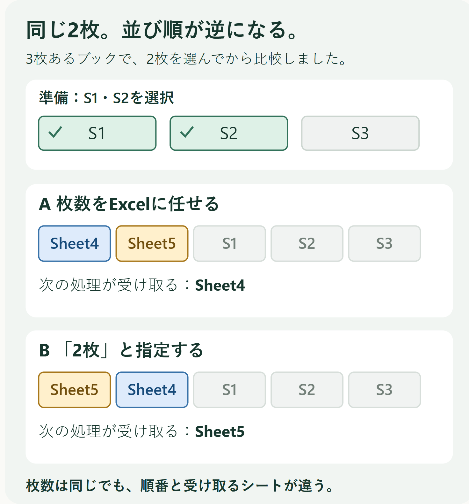

Oxi 開発ノート約3分で読めます
「シートを2枚追加する」だけなのに、Excelは頼み方で順番を変えた
「Excelのシートを2枚増やす」
同じ枚数が増えるなら、同じ操作に思えます。ところが、Excelに枚数を任せるか、「2枚」とはっきり指定するかで、新しいシートの並び順が反対になる例が見つかりました。
しかも、違うのは並び順だけではありません。続きの自動処理が受け取るシートも変わります。

実Excelで記録した結果の模式図です。画面のスクリーンショットではありません。
この違いに出会ったのは、Oxiの開発中です。Oxiは、ブラウザーなどでOffice文書を扱うためのオープンソースのプロジェクトです。Excelの自動処理に対応するため、実際のExcelと動きを比較しています。
同じExcelに、2通りの頼み方を試す
今回は、マクロからシートを追加する操作を調べました。マクロは、Excelの操作を自動化する小さなプログラムです。
既存のシートが3枚あるブックを用意し、そのうち2枚を選びます。その状態で、次の2通りを比べました。
- 追加する枚数の指定を省き、Excelに任せる。
- 追加する枚数を「2枚」と指定する。
今回確かめた環境では、どちらも新しいシートが2枚増えました。自動で付いた名前は「Sheet4」と「Sheet5」です。
ところが、結果を並べると違いがありました。
| 頼み方 | 新しいシートの並び（左から） | マクロが受け取ったシート |
|---|---|---|
| 枚数をExcelに任せる | Sheet4 → Sheet5 | Sheet4 |
| 「2枚」と指定する | Sheet5 → Sheet4 | Sheet5 |
同じ条件で試し直しても、この違いは再現しました。
「2枚増えた」だけでは、同じ動作とは言えない
人が画面を見ながら使っているなら、順番の違いに気づいて並べ直せるかもしれません。
自動処理では、その違いが次の操作にも関わります。たとえば、追加したシートに売上表を書き込む処理です。追加の結果として渡されるシートが変われば、書き込む対象も変わります。
「シートが2枚増えた」という確認だけでは、ここを見落とします。並び順や、その後の処理に渡されるシートまで見て、ようやく違いが分かりました。
Excelが補う、省略された部分
Excelでは、すべての条件を毎回指定しなくても操作できます。今回も、枚数を指定しなければ、選択しているシートの枚数を使ってくれました。
普段は、その気配りを意識する必要はありません。別のソフトで同じ動きを再現するときには、その判断も調べる必要があります。
「何枚増えるか」だけでなく、「どの順番で並ぶか」「次の処理にどのシートを渡すか」。短い操作の中にも、いくつもの判断がありました。
Oxiでは、こうした違いを実際のExcelとの比較で確かめ、修正を進めています。Excelとの完全互換は、現在も開発中です。
今回の結果は、Windows版Excel 16.0（ビルド20527.0、64ビット、日本語環境）で確認した再現例です。シート名は、今回用意したブックでの表示です。
実測と参考資料
図の並び順と受け取るシートは、同じ条件で実Excelを繰り返し動かして確認しました。
公式資料ではCountの既定値を1と説明しています。この記事は、2枚を選択した状態で確かめた結果を紹介しています。
記事構成の参考
冒頭に動作例を置く構成と、図のそばで一つずつ説明する構成を参考にしました。図と本文はこの記事のために作成しています。